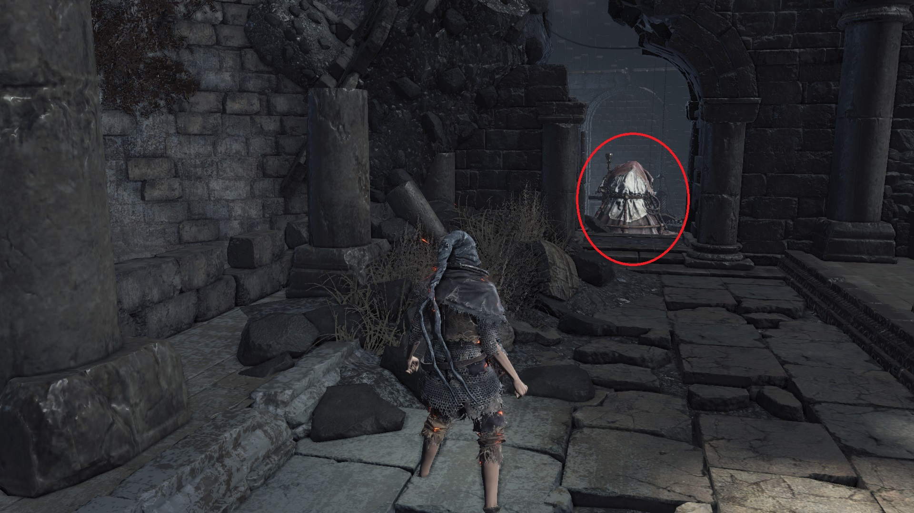

Mendicant's Staff
The Mendicant's Staff allows you to absorb 20% more souls from defeated enemies. You still receive the percentage bonus even if you do not have the stats required to wield the weapon. The percentage bonus is fixed and upgrading the staff does not increase the number. However, the Mendicant's Staff can be stacked with the Silver Serpent Ring(+0,+1,+2,+3), Symbol of Avarice, and Shield of Want. The staff can be farmed from the Man-Serpent Summoners in Archdragon Peak, but the item is a rare drop.
To prepare for the farming in NG+0, ensure you have collected the Gold Serpent Ring+0 in Irithyll Dungeon, transpose the Soul of a Crystal Sage into a Crystal Sage's Rapier, and have collected as many Rusted Gold Coins as you can throughout your playthrough. The easiest way to farm for the Mendicant's Staff is from the Man-Serpent Summoner near the Great Belfry bonfire. Equip the Gold Serpent Ring+0, Symbol of Avarice, Crystal Sage's Rapier in the left hand, and a hard-hitting weapon in the right hand. Backup your game file "DS30000.sl2" as per the methods shown in the thread below. Pop a Rusted Gold Coin and kill the Man-Serpent Summoner as quickly as possible before it has a chance to summon Prince Ricard. You might have to sit at the bonfire and repeat the process many times for the staff to show up. If you exhausted your supply of Rusted Gold Coins without getting the staff, load your backup and try again.
https://steamcommunity.com/app/374320/discussions/0/2152098843861775918/
